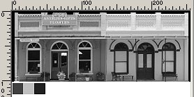

While I used PaintShopPro7, this same technique can be used with MS Paint, which has no native ability to make an alpha channel. The paint program you use for this technique does not have to be able to generate an alpha anything. Instead, TGATool does it for you.
First, File | Open the TGATool and find and load the bmp file (here it was BCFillerStr1.bmp).
As you can see in the next photo, it has no Alpha Channel texture showing in the box on the upper right. And you will notice two buttons below the blank Alpha area. These are "Create Alpha Channel" and "Create Alpha Template". Click the one for the Template.
What this does is create a grayscale Alpha Template, which looks like this:
Now you need to operate on the Template and create a black and white Alpha Channel. This will be done in your paint program, so you need to send the Template to that program. You may either click on the menu item Image, and send the Template to the drawing program, or you may right click on the Template, and from the box which appears, do the same thing. This opens your painting program (in my case PSP7) and you will see that the Template is there for you to manipulate, and further that the color palette is not color at all, but shades of gray. So, chose the Styles to be dead black and dead white.
What you are going to do is paint the black where you wish the Alpha Channel to cause the photo to become transparent or invisible, and white where you wish the Alpha Channel to allow the underlying colors to show through. So, fire up your paintbrush, enlarge the artwork, and begin painting some black along the top edge and between the upright column tops.
The object is to make the trees and sky invisible along the top edge of the buildings. And while you are doing it, run some black vertically along both edges of the building. Pretty soon you will have something that looks like this:

Now, the next step is to paint with white where you wish the building to show through. This means paint white over everything that is not dead black.
And that includes the three paint samples below the building, as well. You can carefully use the paintbrush to get into the nooks and crannies, or you might try simply using the Color Replacer tool to change the grays to white. If you make a mistake, simply "undo" and try again, perhaps with a different tolerance. Soon you will have converted your grayscale Template into a regular black and white Alpha looking piece of artwork.
The next step is to "Save" (not "Save As") the modified artwork. This will send it back to TGATool. Then, close out of PSP7 and you will be back at TGATool, and it will look like this:
Now you need to save this artwork with its Alpha Channel, as a tga file. Do this by clicking on the menu item File, and Save As a tga file, with whatever name you choose, and probably in the same location as your dst file. If you wish, you may also make an ace file by exporting the file with an appropriate ace name to perhaps the same location.
This process does bring up one little problem, and that is that the file name may have more than the DOS moniker of 8.3. If it does not, you can use the TSM program to change the name of the texture file references to the new tga file. Otherwise, you will need to either rename the new tga file to the 8.3 format so that TSM can do its thing, or you will need to manually go through all the texture references and change them from the original bmp name (which was BCFilleStr1.bmp) to the new name, which in my case is BCFillerStr1.tga. Of course, if you have not yet made the 3D model, you can use the tga file you just generated to texture the model in the first place, or even retexture it completely with the new tga file.
So, now you have created a tga file with an Alpha Channel by using TGATool. You may use this same technique to create Alpha Channels for truck sideframes, building windows, or whatever else strikes your fancy.
The next step is to create the 3D structure using an Alpha capable material such as TransNorm, s and sd files, and take a look at your handiwork in the Route Editor, or by using Shape File Viewer.
So that you might see a finished project, I am including a photo of the dst file that I used to make the buildings. You will see that the front wall sticks up higher than the roof, a sort of false front. I did not add a second poly behind the front wall, so that when you look at the structure from the rear, the little columns are not visible. However, it is perfectly possible to add a poly facing backwardly behind the false front, and texture it as well.